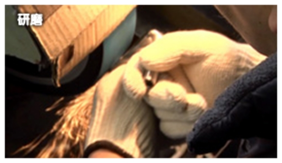

PROCESS
MOVIE
国産アイアンヘッド発祥の地であり、世界中のゴルファーが認める職人の町、兵庫県市川町。 MYSTERYアイアンは、この町で幾人もの職人達の手を経て 純国産ヘッドとして生まれてきます。
＜軟鉄鍛造アイアン製造工程＞
刀鍛冶技術の応用 鍛造(フォージド)製法
刀鍛冶技術の応用 鍛造(フォージド)製法
- ● 1200°C に熱した鋼材を高圧でプレス
- ● バックフェイスCNC加工
- ● ロゴ刻印
- ● スコアライン打刻
- ● ロフト、ライ角調整
- ● 研磨 （職人による芸術的技術）
- ● 研磨最終工程 （振動バレル・遠心バレル）
- ● サンドブラスト加工
- ● メッキ処理
- ● 刻印部カラーリング
